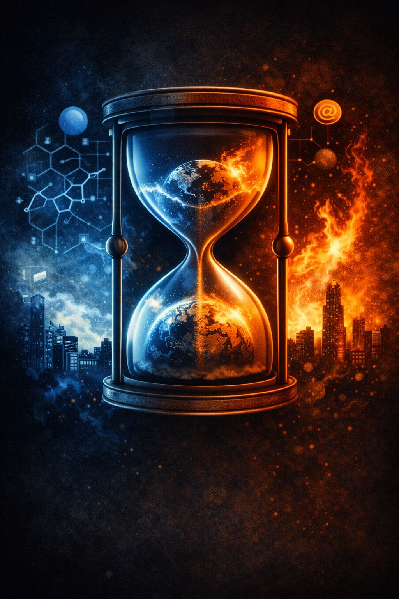

The digital age rewarded a new kind of public figure:
👉 the influencer.
Unlike traditional leaders who derived authority from institutions, governance, or expertise, influencers derive authority from:
Their power flows through engagement.
And in modern digital systems, fear is one of the most profitable forms of engagement available.
In an environment saturated with anxiety and information overload, influencers quickly discover what spreads fastest:
Even without formal psychological knowledge, many intuitively learn:
Fear travels farther than nuance.
Algorithms reinforce this dynamic.
Platforms reward content that generates:
Emotion keeps attention active.
Attention becomes profit.
At scale, influencers begin constructing narratives framed around existential danger.
Sometimes directly. Sometimes subtly.
Common phrases include:
These messages operate simultaneously on two levels:
The surface claim being made, which may be exaggerated, distorted, or partially true.
A deeper psychological signal:
“Your identity, future, and survival are under threat.”
When the symbolic layer resonates, the nervous system reacts.
Analysis begins giving way to protection.
Fear rhetoric changes the influencer’s role.
They stop appearing as:
…and begin appearing as:
👉 protectors
Once this transition occurs, criticism of the influencer becomes psychologically fused with criticism of the audience itself.
The symbolic equation becomes:
“If they are attacked, we are attacked.”
One of the strongest self-reinforcing mechanisms in symbolic systems is:
👉 Persecution Validation
This occurs when criticism strengthens loyalty instead of weakening it.
When influencers are:
…they may reinterpret the attack as proof of importance:
“They fear us because we’re right.”
The scrutiny itself becomes evidence of legitimacy.
This transforms the influencer into a persecuted heroic figure.
Once fear becomes the operating system, additional mechanisms emerge:
At this stage, followers become psychologically organized around shared threat rather than shared understanding.
Influencers who successfully generate existential narratives become:
👉 identity architects
Fear stops functioning as a temporary emotional reaction.
It becomes:
Fear is no longer just a tool.
It becomes the organizing principle itself.
This system does not always require malicious intent.
Many influencers sincerely believe their own narratives.
But in large-scale emotional systems:
👉 effect matters more than intention.
As audiences become more anxious:
Fear becomes fuel.
Crisis becomes brand equity.
At peak intensity, the influencer evolves through stages:
👤 Person
⬇
🎭 Symbol
⬇
🛡️ Survival Stand-In
At this point, the narrative no longer exists primarily to inform.
It exists to preserve psychological stability through escalating threat.
And in digital environments optimized for emotional acceleration, escalation spreads extremely efficiently.
A public figure whose authority derives primarily from attention rather than institution or formal expertise.
The process by which criticism strengthens loyalty to a symbolic figure instead of weakening it.
By weaponizing fear — intentionally or unintentionally — influencers convert instability into influence.
Followers become psychological defenders of symbolic meaning systems tied to identity, belonging, and survival.
Most never consciously agreed to this arrangement.
But once fear fuses with identity, the system begins defending itself automatically.